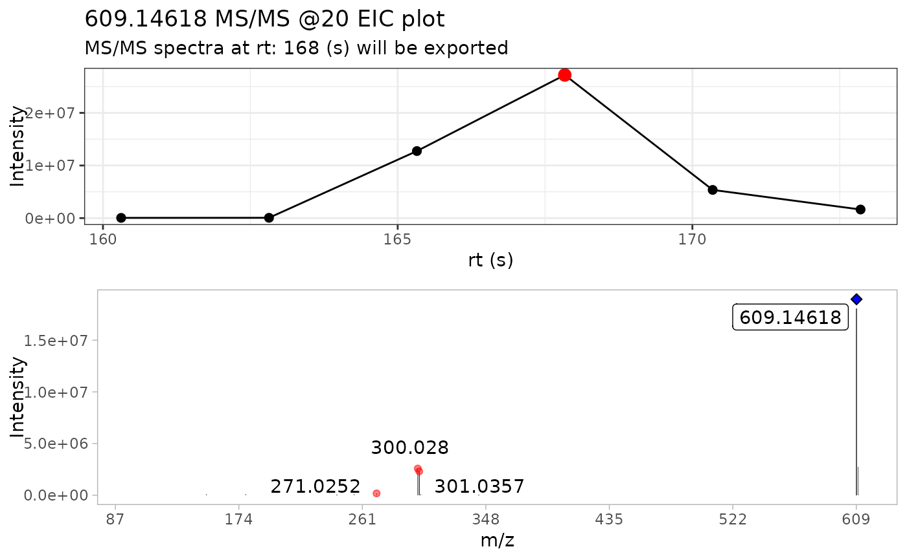
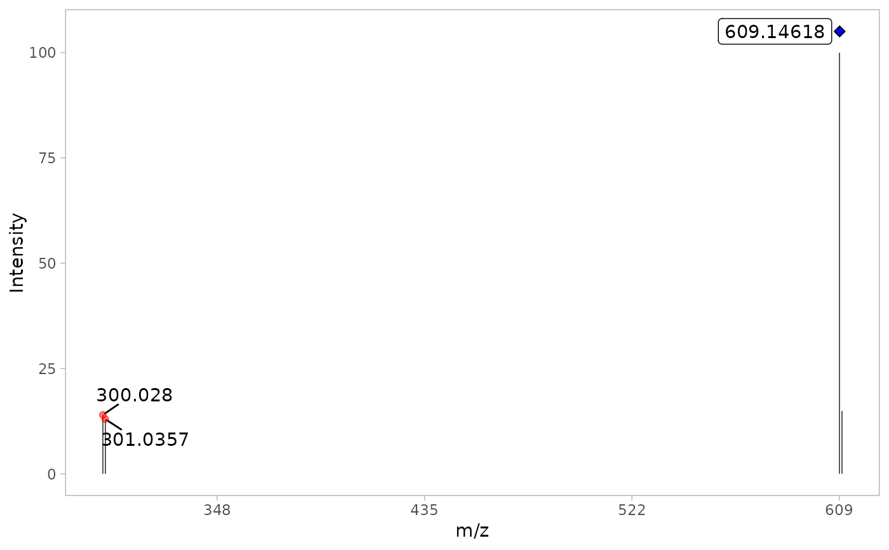

This function plots the resulting MS/MS spectra of the most intense scan
Arguments
- spec
a data frame containing the MS/MS spectra of the most intense scan
- compound
a character, if user is using batch_* functions, they need to provide a character with the identical “Name” of the compound provided in the
batch_import_mzxml()table.- ppm
mass error in ppm tolerance to check if the m/z precursor is being detected or not in the MS/MS spectra.
Value
a ggplot plot of the MS/MS spectra. A filled blue diamond is
placed above the precursor ion. If the precursor ion was not
detected in the MS/MS spectra, the blue diamond is not filled.
Examples
Rutin_file <- system.file("extdata",
"Rutin_neg_20eV.mzXML",
package = "MS2extract"
)
# Region of interest table (rt in seconds)
Rutin_data <- data.frame(Formula = "C27H30O16",
Ionization_mode = "Negative",
min_rt = 160, max_rt = 175
)
# Importing MS2 data
rutin_raw <- import_mzxml(Rutin_file, Rutin_data)
#> • Processing: Rutin_neg_20eV.mzXML
#> • Found 1 CE value: 20
#> • Remember to match CE velues in spec_metadata when exporting your library
#> • m/z range given 10 ppm: 609.14002 and 609.15221
Rutin_extracted <- extract_MS2(rutin_raw)
#> Warning: `position_stack()` requires non-overlapping x intervals.

Rutin_detected <- detect_mass(Rutin_extracted,
normalize = TRUE, # Allow normalization
min_int = 1) # 1% as minimum intensity
MS2_spectra <- plot_MS2spectra(Rutin_detected)
print(MS2_spectra)
